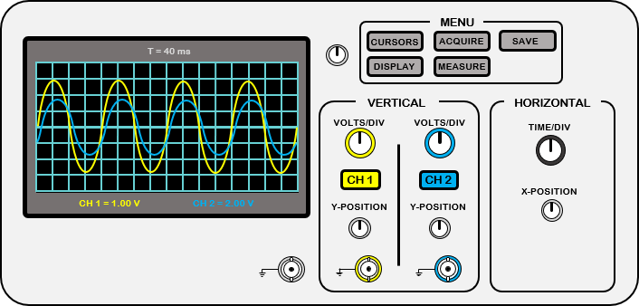
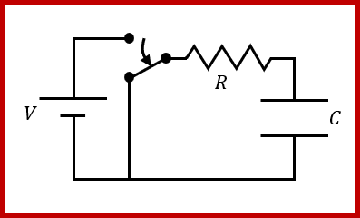
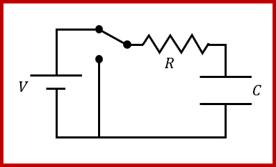
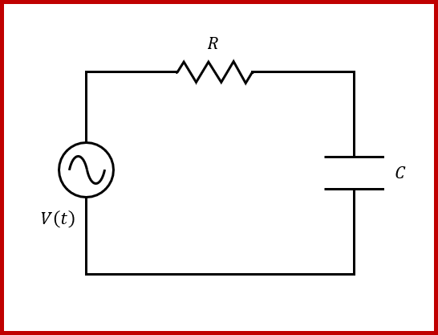
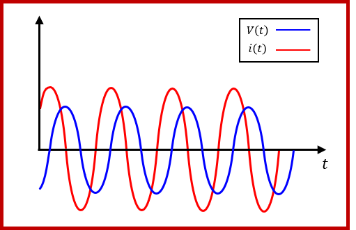
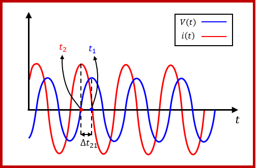
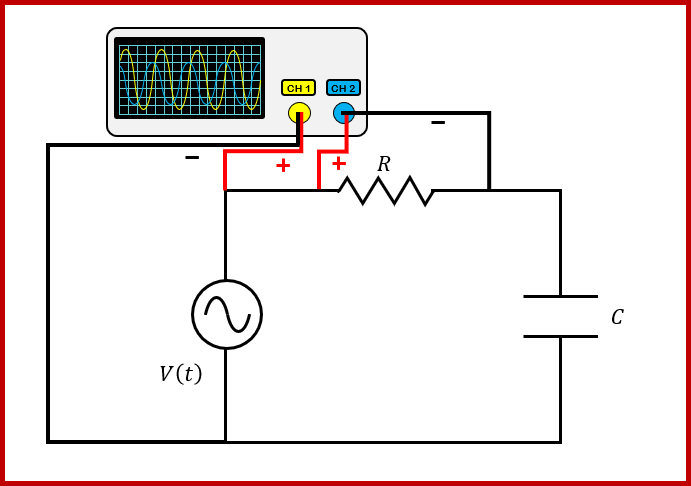

Guion de las prácticas de laboratorio de Física Aplicada a la Ingeniería
Práctica 1: Equivalente de Thévenin-Norton 1
1.1. Fundamento teórico 1
1.2. Montaje experimental 3
Práctica 2: Medida de parámetros de impedancias con el osciloscopio 4
2.1. Fundamento teórico 4
2.2. Montaje experimental 9
Supongamos que tenemos un circuito compuesto por elementos lineales. Un elemento es lineal si al considerar el voltaje del elemento como una función dependiente de la corriente satisface lo siguiente:
, . | Ec. (1. 1) |
El Teorema de Thévenin-Norton establece que un circuito conectado a dos terminales libres y puede sustituirse por una fuente de tensión independiente con una impedancia en serie (equivalente Thévenin) o por una fuente de corriente independiente con una impedancia en paralelo (equivalente Norton), ver Fig 1. 1.
Fig 1. 1. Circuitos equivalentes.
El equivalente Thévenin consiste en una fuente de tensión independiente que se denomina voltaje Thévenin, , y una impedancia en serie que se denomina impedancia Thévenin, , ver Fig 1. 2 (a). De forma análoga, el equivalente Norton consiste en una fuente de corriente independiente que se denomina corriente Norton, , y una impedancia en paralelo que se denomina impedancia Norton, , ver Fig 1. 2 (b). El teorema de Thévenin-Norton establece que además de poderse sustituir un circuito por uno de estos equivalentes o ambos (véase las diapositivas del tema 3 en las que se explican estos casos), en el caso de existir ambos equivalentes se cumple:
y . | Ec. (1. 2) |
Una de las aplicaciones más importantes de los equivalentes de Thévenin y Norton es la de obtener el valor de impedancia que se debe de introducir entre los terminales y al que se le transfiere el mayor valor de potencia activa. Este resultado es conocido como teorema de transferencia de máxima potencia y establece que el valor de impedancia que consume mayor potencia activa entre los terminales y es el complejo conjugado del valor de impedancia Thévenin o Norton, es decir,
Ec. (1. 3) |
De este resultado se deriva que el mayor valor de potencia activa que se puede transmitir a una impedancia es
Ec. (1. 4) |
Estos resultados pueden verse más detallados en las diapositivas del tema 3 del curso. Nótese que no hacemos distinción entre los equivalentes de Thévenin y Norton y eso es debido a que este resultado solo puede darse en circuitos en los que existan ambos equivalentes.
La práctica va a consistir en obtener experimentalmente el equivalente Thévenin de un circuito y medir la potencia máxima que se puede transmitir a una impedancia de carga. La primera parte de la práctica va a consistir en obtener los parámetros del equivalente Thévenin del circuito representado en Fig 1. 3 entre los terminales y .
Fig 1. 3. Circuito de la práctica.
A continuación, mostraremos los pasos a seguir en esta primera parte de la práctica:
En la siguiente parte de la práctica, utilizaremos la caja de décadas que es una resistencia cuyo valor puede ajustarse. Para medir la potencia máxima que se puede transmitir a una impedancia entre los terminales y , mediremos la diferencia de potencial y la corriente que circula por una resistencia colocada entre y con el mismo valor de la resistencia Thévenin medida en la primera parte de la práctica. Los pasos a seguir serán los siguientes:
Fig 1. 4. Caja de décadas.
El osciloscopio es un dispositivo que permite visualizar la diferencia de potencial de una señal oscilante en el tiempo. Al igual que en la mayoría de los dispositivos de medida, existen dos tipos fundamentales de osciloscopios: el analógico y el digital. El primer osciloscopio que se construyó fue el osciloscopio analógico. El osciloscopio analógico se compone de un tubo de rayos catódicos seguido de dos placas deflectoras dispuestas de forma horizontal y dos placas deflectoras dispuestas de forma vertical. Las placas deflectoras son electrodos que se polarizan a una diferencia de potencial produciendo que los electrones acelerados en un cañón de electrones varíen su trayectoria acorde a la diferencia de potencial aplicada y choquen en una pantalla fluorescente produciendo un brillo en el punto de impacto. Las placas deflectoras dispuestas de forma horizontal se polarizan con la señal que queremos visualizar produciendo el movimiento vertical en el osciloscopio correspondiente a dicha señal y las placas dispuestas de forma vertical se polarizan con una señal de sierra produciendo el desplazamiento en el tiempo en el eje horizontal.

Fig. 2. 1. Esquema general de un osciloscopio.
En Fig. 2. 1, se muestra un esquema representativo de un osciloscopio. A continuación, vamos a enumerar los aspectos fundamentales para su uso:


En esta segunda práctica, vamos a usar el osciloscopio para obtener la capacidad de un condensador de diferentes formas. Un condensador es un dispositivo que acumula carga cuando se conecta a una fuente de tensión y luego, es capaz de liberarla al resto del circuito cuando se desconecta de la fuente., . | Ec. (2. 1) |
En las diapositivas del tema 2 del curso, se describe cómo funcionan los condensadores y bobinas en circuitos transitorios de orden 1 y 2. Recordemos como funciona un circuito RC en serie cuando está conectado a una fuente de tensión en continua. Supongamos que tenemos el circuito mostrado en Fig. 2. 2, cuando el conmutador permite el paso de corriente de la fuente de tensión como se muestra en Fig. 2. 2 (a), el condensador acumulará tensión acorde a la siguiente ecuación:
Consideremos que se desconecta la fuente, como se muestra en Fig. 2. 2 (b), en el instante de tiempo , entonces, la diferencia de potencial entre las placas del condensador vendrá dada por:
, . | Ec. (2. 2) |
Usando estos resultados, se puede obtener la capacidad del condensador del circuito Fig. 2. 2, de las siguientes maneras:
En el primer caso, el resultado se derivará los parámetros de la regresión lineal. Este procedimiento es más lento, pero más fiable debido a que se obtiene el resultado a partir de un conjunto de medidas. En el segundo, el resultado es menos fiable ya que se obtiene de una única medida, pero es mucho más rápido de obtener. Este resultado se deriva del siguiente razonamiento. Supongamos en Ec. (2. 1) que , entonces
, | Ec. (2. 3) |
por lo tanto, si medimos el tiempo en el que el condensador se carga a un , podemos obtener su capacidad de la siguiente forma:
. | Ec. (2. 4) |

Estos métodos no son la única manera de medir el parámetro característico de una inductancia. Otra forma de obtenerlo es midiendo el desfase que se produce entre la diferencia de potencial y la corriente cuando se alimenta con una fuente sinusoidal. En corriente alterna, la fase de la diferencia de potencial y de la corriente de las bobinas y de los condensadores se desfasa , en particular, en el caso de los condensadores, la fase de la corriente se adelanta respecto a la fase de su diferencia de potencial. Teniendo esto en cuenta, se puede obtener el parámetro de una impedancia si se mide el desfase temporal producido en la impedancia.Para eso, consideremos el circuito mostrado en Fig. 2. 3 y representemos la diferencia de potencial y la corriente en el mismo diagrama (Fig. 2. 4).

La ecuación de la tensión viene dada por
Ec. (2. 5) |
y la de la corriente por
Ec. (2. 6) |
donde es la frecuencia angular el desfase de la tensión y el desfase de la corriente. Supongamos que en el instante la fase de la tensión es igual a la fase de la corriente en el instante de tiempo , entonces
, . | Ec. (2. 7) |
El mínimo desfase temporal se producirá cuando , es decir,
Ec. (2. 8) |
por lo tanto, el desfase de las fases se obtendrá a partir del desfase temporal a partir de la siguiente ecuación:
Ec. (2. 9) |

Aunque podemos obtener el desfase comparando las dos señales cuando se encuentran en cualquier fase, la forma más precisa de hacerlo es medir el desfase entre dos picos sucesivos como se muestra en Fig. 2. 5.Nótese que no consideramos debido a que una impedancia, de forma general, puede tener parte resistiva, lo que varía ese desfase. Además, si se conecta una bobina directamente a una fuente de tensión a baja frecuencia, produciremos un cortocircuito al igual que si conectamos un condensador a una fuente de tensión a alta frecuencia, por eso, en estos casos, siempre que se diseña un circuito, los condensadores y bobinas se conectarán en serie a una resistencia lo suficientemente grande para evitar que se produzca un cortocircuito.
Recordemos que con el osciloscopio no podemos medir la corriente que circula por un elemento, por eso, para medir la capacidad de un condensador usando este método, vamos a considerar un circuito como el que se muestra en Fig. 2. 3, en el que conectaremos una resistencia en serie al condensador, de esta forma, podremos representar con el osciloscopio una señal proporcional a la corriente del condensador mostrando la señal de la diferencia de potencial de la resistencia. Por eso, si antes de montar el circuito medimos la resistencia con un polímetro, podremos obtener la capacidad midiendo el desfase temporal producido entre ambas señales. Al conectar una resistencia en serie con un condensador o una bobina, la parte imaginaria de la impedancia corresponderá con la impedancia del condensador o la bobina:
Ec. (2. 10) |
Entonces, como la fórmula de la impedancia de un condensador es , podemos obtener la capacidad del condensador a partir de la
Ec. (2. 11) |
Para concluir, como la corriente está adelantada a la tensión en el caso de la impedancia de una resistencia en serie con un condensador, como es el caso mostrado en Fig. 2. 5, por lo que y, por lo tanto, . Esto es así porque la capacidad de un condensador es positiva, y, por lo tanto, para contrarrestar el signo en Ec. (2. 11), el desfase tiene que ser negativo.
La práctica consistirá en obtener la capacidad de un condensador usando el osciloscopio. Para ello, montaremos el circuito que se muestra en Fig. 2. 6. La resistencia que utilizaremos será una de las resistencias utilizadas en la práctica anterior. El condensador que se utilizará será el proporcionado por el profesor. Como fuente utilizaremos el generador de señales y lo fijaremos a una señal cuadrada de de amplitud a de frecuencia. Al realizar el montaje mostrado en Fig. 2. 6, en el canal 1, deberemos ver la señal de entrada y en el canal 2, la señal de tensión del condensador. A continuación, vamos a detallar los pasos a seguir:
En la segunda parte de la práctica, consideraremos el mismo circuito, sin embargo, en el canal 2, mediremos la tensión de la resistencia como se muestra en Fig. 2. 7 y la señal de entrada la cambiaremos a una de tipo sinusoidal. Los pasos a seguir serán los siguientes:
